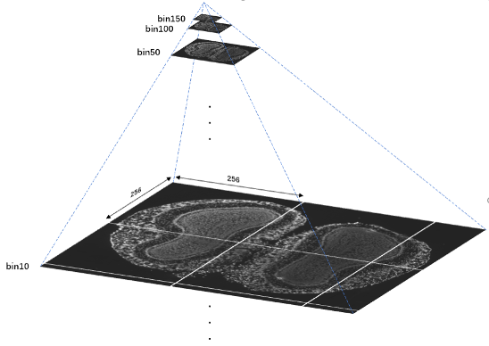
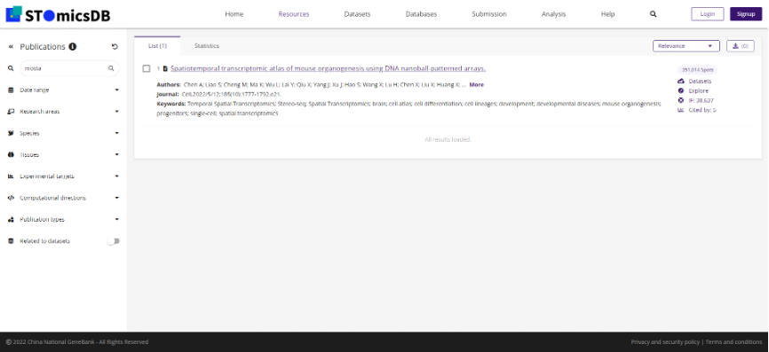
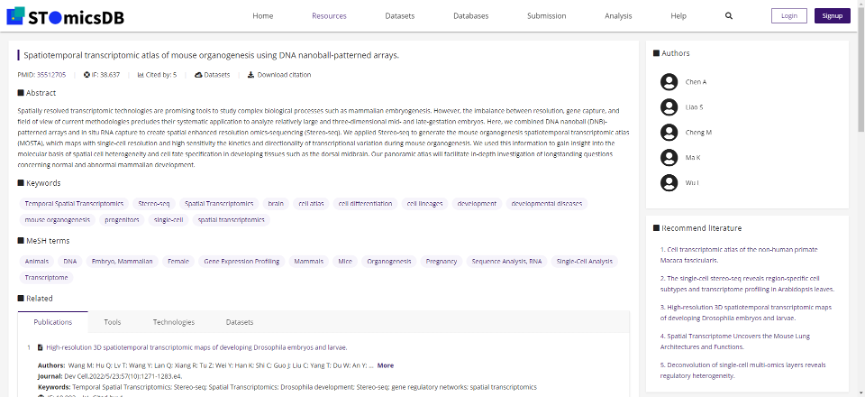

数据及元数据标准
数据及元数据标准
4.1.数据和元数据的收集
4.2. 如何递交原始数据
将原始测序的时空转录组学数据递交至STOC，用户除了需要提供原始数据，还需要提供描述测序数据元数据信息以便用户递交的数据可以被更好的检索和复用。 用户可以通过参阅下述网址中的方式进行原始数据递交： https://db.cngb.org/stomics/submission 以下章节将会帮助用户了解需要递交哪些数据，同时下述网址中可以查阅递交模板： https://ftp.cngb.org/pub/stomics/
Field Name |
Note |
|---|---|
Stereo-seq Fastq |
时空测序芯片测序文件，.Fastq |
Stereo chip mask |
数据文件，支持.h5和.bin后缀 |
microscope slide image |
图像文件，.tiff或.tif |
我们约定了时空转录组学测序的原始文件类型，包括时空测序芯片测序文件FASTQ，FASTQ是一种基于文本的格式，用于存储生物序列（通常是核苷酸序列）及其相应的测序质量分数。时空定位芯片掩模文件，用二进制格式.bin或.h5格式，用于存放和记录时空定位芯片测序的探针序列及其空间分布，后续与时空测序数据进行比对，从而确定时空测序技术捕获到的分子在空间上的分布情况。时空测序影像，利用图像学中通用的图像文件格式TIFF或TIF，是一种用于存储时空转录组测序前拍摄的显微影像，用于后期与时空转录组测序数据进行配准。
4.4. 递交标准分析结果文件
Field Name |
Note |
|---|---|
raw feature-spot matrix |
矩阵文件名，支持.gem和.gef后缀 |
filtered feature-spot matrix |
矩阵文件名，支持.gem和.gef后缀 |
cell annotation |
注释文件 |
binsize |
格式校验 |
cell bin |
支持列举的值填写 |
MD5.list |
MD5文件 |
Mapping |
比对结果文件 |
同时我们也约定了标准分析结果文件，它包括上述表格中的文件类型。其中，原始表达矩阵，即时空转录组学标准分析结果得到的时空转录组基因表达矩阵，filtered后的表达矩阵包括不限于按照组织轮廓切割、按照组织的最大外接矩形切割的表达矩阵等。基因表达矩阵文件用于存储基因的空间表达数据。Stereo-seq技术的SAW 流程中生成的GEF 文件可通过小工具转换成纯文本表格格式基因表达矩阵（GEM），基本格式为含表头的四列 数据，分别为基因名称、x 坐标、y 坐标、和MID 数。表达矩阵中原点位置校准至（0，0）。基因表达矩阵的表头部分包含六行以“#”开头的注释信息。表头字段说明见表**。
表头字段 |
数据类型 |
示例 |
说明 |
|---|---|---|---|
#FileFormat |
string |
GEMv0.1 |
基因表达矩阵文件格式版本号。 |
#SortedBy |
string |
None |
基因表达矩阵排序策略，有效值包括“geneID”, “x”, “y”, ”MIDCount”, “None” |
#BinSize |
uint16 |
1 |
（见** 属于概念Bin。） |
#StereoChip |
string |
FP200000617TL_C3 |
时空芯片SN。 |
#OffsetX |
uint32 |
1 |
原点校准至（0，0）前x坐标。 |
#OffsetY |
uint32 |
1 |
原点校准至（0，0）前y坐标。 |
geneID |
string |
Cr2 |
基因名称。 |
x |
uint32 |
16809 |
x坐标。 |
y |
uint32 |
8546 |
y坐标。 |
MIDCount |
uint32 |
1 |
该行基因在坐标（x，y）处的MID数。 |
比对结果文件，BAM格式为存储测序数据和参考基因组比对、注释结果的常用二进制格式。其中Stereo-seq技术得到的BAM格式文件在QUAL部分进行了Q4简并，更适用于时空转录组大数据的读写和存储。Mapping BAM标签栏 添加自定义标签记录reads的坐标、CID和MID相关的信息，count BAM添加注释信息。
BAM标签说明
标签 |
说明 |
|---|---|
Cx:i |
CID对应的空间位置x坐标。 |
Cy:i |
CID对应的空间位置y坐标。 |
UR:Z |
原始MID以二进制编码后用十六进制打印的结果。 |
XF:Z |
该序列比对到参考基因组的区域，有效值包括0=EXONIC，1=INTRONIC， 2=INTERGENIC，分别表示外显子区、内含子区和基因间区。 |
GE:Z |
注释基因名称。 |
GS:Z |
该序列比对到参考序列的正链（+）或负链（-）。 |
UB:Z |
SAW count工具校正后的MID。 |
mapping BAM文件示例： V350043840L1C001R07000634234 272 1 3000094 1 34M16S * 0 0 GGGCTTTTTTTTTTTTTTTTTTTTTTTTTTGGGTACCAAAATTCTTTATT F/5+F-GGGGGGGGGGGGFGGGGGGGGFFGFEFFFFFGFFFGFGFGGGGG NH:i:3 HI:i:1 AS:i:33 nM:i:0 Cx:i:12275 Cy:i:17271 UR:Z:49A9E count BAM文件示例： V350044293L1C004R0560478942 0 1 3107384 255 11M231866N39M * 0 0 CGTACTGAGAGGCGGGATCAACTGAGAGAACACTATCTTGGTAGGGCTCT EF=EFFFBE2 E=BF>D?;5A@CFECE:A4FFE@*FCBEFAC;5F&F.E0F NH:i:1 HI:i:1 AS:i:38 nM:i:4 Cx:i:7075 Cy:i:15278 UR:Z:2064 XF:i:1 GE:Z:Xkr4 GS:Z:-
图像金字塔 图像金字塔模型是一种多分辨率层次模型，可根据需要以不同分辨率进行图像的存储与显示。所表示的图像范围不变的情况下，金字塔越靠近底层所表示的图像信息越详细，比例尺越大。对register工具处理后的配准图进行梯度降采样处理，得到多个图像数据以图像金字塔形式保存。每个分辨率层级中，将完整的组织配准图像切分为尺寸256 x 256像素的图像碎片进行保存，若在当前分辨率下的图片尺寸小于256ⅹ256，则无需切割。文件名以“.ssDNA.rpi”或“.conA.rpi”结尾，分别对应染色细胞核和细胞膜两种染色方式。 图像金字塔结构示例：
基因表达文件 基因表达文件（GEF）是一种为可视化展示时空组基因表达空间分布而设计的文件，其文件结构是一种包含多个bin size 基因表达矩阵、有层级关系的结构。 每个GEF 文件整理一组空间基因表达矩阵。该文件包含组（group）和数据集（dataset）两种主要对象类型。数据 集是一种多维数组，而组是可以包含数据集和其他组的管理结构。 基因表达文件第一层可包括“geneExp”（必须），“wholeExp”（可选），和“stat”（可选）三个组。“geneExp” 中包含一种或多种bin size 下每个基因的表达数据；“wholeExp”中包含一种或多种bin size 下每个坐标点（spot） 的表达数据和基因个数；“stat”中包含基因名称、每个基因的总表达量、以及每个基因的富集程度打分。基因表达 文件每个数据集中的 “Attributes”记录数据集属性信息。文件格式图示见下方链接，字段说明见表2-2。SAW 流程 运行生成三个GEF 区别见表2-3。 GEF 格式图示: https://www.processon.com/view/link/610cc49c7d9c087bbd1ab7ab#map
4.5.递交其他分析结果
4.6.元数据
时空组学元数据 时空组学数据集元数据表 时空组学数据集元数据表，包括项目、组织、样本生物信息分析环境等基本信息见表A.1。
时空组学数据集元数据表
序号 |
名称 |
描述 |
信息保护 |
数据类型 |
|---|---|---|---|---|
1 |
项目名称/Project name |
研究项目名称。 |
不保护 |
字符类型 |
2 |
项目编号/Project ID |
研究项目编号或代号。 |
不保护 |
字符类型 |
3 |
研究类型/Study type |
研究项目的类型。 |
不保护 |
字符类型 |
4 |
项目描述/Project Description |
项目相关描述信息。 |
不保护 |
字符类型 |
5 |
芯片数/Chip counts |
项目关联芯片数量。 |
不保护 |
整数类型 |
6 |
样本名称/Sample name |
脱敏后的被采集样本的名称。 |
不保护 |
字符类型 |
7 |
样本标题/Sample title |
对样本的简单描述。 |
不保护 |
字符类型 |
8 |
采集时间/Collection date |
样本的采集时间。 |
不保护 |
时间类型 |
9 |
分离个体/Isolate |
对获得该样品的特定个体的鉴定或描述，或其他特殊描述性属性。 |
不保护 |
字符类型 |
10 |
性别/ Gender |
取样生物的生物学性别。 |
保护 |
字符类型 |
11 |
年龄/Age |
样本采集时的年龄。取决于物种和研究。 |
保护 |
字符类型 |
12 |
发展阶段/Developmental stage |
样本的发展阶段。 |
保护 |
字符类型 |
13 |
样本材料提供者/Biomaterial provider |
实验室/学术带头人/负责人的名称和地址，或收集机构的标识。 |
不保护 |
字符类型 |
14 |
地理位置/Geographic location |
样品的地理位置。 |
不保护 |
字符类型 |
15 |
物种/Species |
样本的物种。 |
不保护 |
字符类型 |
16 |
组织类型/Tissue |
样本的组织来源。 |
不保护 |
字符类型 |
17 |
样本状态/Sample Status |
样本的储存形式。 |
不保护 |
字符类型 |
18 |
样本描述/Sample Description |
样本描述信息。 |
不保护 |
字符类型 |
19 |
组织切片编号/Tissue section ID |
每个组织切片的唯一标识符。 |
不保护 |
字符类型 |
20 |
组织样本类型/Tissue type |
一般为新鲜冷冻或福尔马林固定石蜡包埋(FFPE)组织。 |
不保护 |
字符类型 |
21 |
组织切片描述/Section resource |
从解剖学的角度描述该部分。对于人类，可以是“矢状后切面”、“矢状前切面”等。对于植物，可以是“横断面”、“切向纵断面”、“径向纵断面”等。 |
不保护 |
字符类型 |
22 |
冷冻切片温度/Cryosectioning temperature |
冷冻切片的温度。 |
不保护 |
整数类型 |
23 |
组织切片尺寸/Tissue section |
组织切片的尺寸范围。 |
不保护 |
字符类型 |
24 |
组织切片厚度/Section thickness |
组织切片的厚度，大多为10µm。 |
不保护 |
字符类型 |
25 |
染色实验描述/Staining protocol |
实验切片的染色描述，如免疫荧光染色、DNA荧光染色或组织学染色等。 |
不保护 |
字符类型 |
26 |
RNA质量评估值/RNA integrity number (RIN) |
组织切片放入空间载玻片前进行的RNA质量评估,一般要求RIN值≥7。 |
不保护 |
浮点类型 |
27 |
FFPE样本RNA质量评估系数/DV200 |
FFPE（福尔马林固定、石蜡包埋的样本）样本的RNA质量评估系数，表示200个核苷酸大小的RNA片段的百分比，一般应≥50%。 |
不保护 |
浮点类型 |
28 |
组织切片评分/Tissue score |
大组织样本在切片生成小的样本过程中的得分（非必要）。 |
不保护 |
浮点类型 |
29 |
最佳透化时间/Optimal permeabilization time |
对于新鲜冷冻样本，每种组织类型确保最佳捕获效果的透化时间。 |
不保护 |
浮数类型 |
时空组学生物信息分析环境元数据表
时空组学数据集生成过程中涉及到的图像配准、细胞识别和图像分割、像素聚合分析、聚类聚合分析、细胞聚合分析、数据可视化等生物信息分析方法和软件相关信息见表A.2。
时空组学生物信息分析环境元数据表
序号 |
名称 |
描述 |
信息保护 |
数据类型 |
|---|---|---|---|---|
1 |
软件名称/Software name |
生物信息分析过程中所使用软件名称。 |
不保护 |
字符类型 |
2 |
软件版本/Software version |
生物信息分析过程中所使用软件版本。 |
不保护 |
字符类型 |
3 |
软件参数/Software parameter |
生物信息分析过程中所使用软件的参数。 |
不保护 |
字符类型 |
4 |
参考基因组/Reference genome |
基因组参考序列及版本。 |
不保护 |
字符类型 |
5 |
注释文件/Gene annotation |
基因注释文件及版本。 |
不保护 |
字符类型 |
时空组学测序质控数据
时空组学测序及质控相关数据信息,见表。
时空组学测序质控数据
字段 |
数据类型 |
说明 |
|---|---|---|
测序类型/Sequencing type |
字符类型 |
测序类型名称。 |
测序平台/Sequencing platform |
字符类型 |
测序平台名称。 |
设备类型/Equipment type |
字符类型 |
设备类型名称。 |
文库策略描述/Library strategy |
字符类型 |
包括文库设计或构建的策略描述。 |
文库类型/Library type |
字符类型 |
测序的文库类型名称。 |
文库名称/Library name |
字符类型 |
测序文库编号。 |
文库富集方法/Library selection |
字符类型 |
文库制备中对目标物进行富集的方法。 |
插入片段长度/Insert size |
整数类型 |
双端测序的平均插入片段长度。 |
下机数据存储路径/Sequencing raw data path |
字符类型 |
原始下机数据的存储路径。 |
下机数据校验值/Sequencing raw data verification code |
字符类型 |
原始数据唯一的校验值。 |
测序总序列数/Total reads |
整数类型 |
测序得到的总序列个数。 |
测序读长/Reads lenth |
整数类型 |
双端/单端测序读长。 |
总碱基对数/Total base pairs |
整数类型 |
测序总碱基对数。 |
CID Q30 |
浮点类型 |
CID碱基中质量值达到Q30的百分比。 |
MID Q30 |
浮点类型 |
MID碱基中质量值达到Q30的百分比。 |
时空组学芯片质控数据
时空组学芯片质控数据，见表。
时空组学芯片质控数据
字段 |
数据类型 |
说明 |
|---|---|---|
芯片序列号/SN ID |
字符类型 |
定位芯片序列号。 |
测序芯片数/Chip count |
整数类型 |
测序芯片的个数。 |
测序总序列数/Total reads |
整数类型 |
测序得到的总序列个数。 |
碱基总数/Total base |
整数类型 |
测序得到的总碱基数。 |
特异性CID种类数/Unique CID number |
整数类型 |
特异性CID种类数。 |
没有位置信息的reads数/Reads without position |
整数类型 |
没有位置信息的 reads 数。 |
含N的CID数 |
整数类型 |
含有N（未知）碱基的CID 数。 |
含polyA的CID数 |
整数类型 |
含有polyA的CID个数。 |
含polyT的CID数 |
整数类型 |
含有polyT的CID个数。 |
含polyC的CID数 |
整数类型 |
含有polyC的CID个数。 |
含polyG的CID数 |
整数类型 |
含有polyG的CID个数。 |
Q20百分比 |
浮点类型 |
碱基质量值达Q20的百分比。 |
Q30百分比 |
浮点类型 |
碱基质量值达Q30的百分比。 |
芯片质控状态/Chip QC check |
字符类型 |
芯片质量检测是否通过的状态。 |
低质量CID百分比/Low quality CID rate |
浮点类型 |
低质量的CID百分比。 |
最大瑕疵面积/Max defect area |
浮点类型 |
最大瑕疵面积的直径，单位为DNB个数。 |
累计瑕疵面积/Total defect area |
浮点类型 |
瑕疵累计面积对应直径，单位为DNB个数。 |
CID长度/CID lenth |
整数类型 |
CID的长度。 |
CID起始位置/CID start |
整数类型 |
CID的起始位置。 |
MID长度/MID lenth |
整数类型 |
MID的长度。 |
MID起始位置/MID start pos |
整数类型 |
MID起始位置。 |
MID所在位置/MID location |
整数类型 |
MID所在位置。 |
有效CID数/Valid CID |
整数类型 |
能够与芯片CID匹配并得到位置信息的序列个数。 |
含DNB序列数/Reads with dnb |
整数类型 |
被过滤掉的含有DNB的序列个数。 |
含接头序列数/Reads with adapter |
整数类型 |
被过滤掉的含有接头的序列个数。 |
滤后序列数/Clean reads |
整数类型 |
经过质控要求进行过滤后的序列个数。 |
唯一比对序列数/Unique mapping reads |
整数类型 |
有效CID经过滤后在参考基因组上只匹配一次的序列个数。 |
重复比对序列数/Multi-mapping reads |
整数类型 |
有效CID经过滤后在参考基因组上匹配多次的序列个数。 |
未比对上的序列数/Unmapping reads |
整数类型 |
有效CID经过滤后未比对到基因组的序列个数。 |
嵌合比对序列数/Chimeric reads |
整数类型 |
有效CID经过滤后嵌合比对的序列个数。 |
外显子区序列数/Exonic reads |
整数类型 |
在参考基因组上只匹配一次的序列中比对到外显子区的序列个数。 |
内含子区序列数/Intronic reads |
整数类型 |
在参考基因组上只匹配一次的序列中比对到内含子区的序列个数。 |
基因间区序列数/Intergenic reads |
整数类型 |
在参考基因组上只匹配一次的序列中比对到基因间区的序列个数。 |
单一基因序列数/Unique gene reads |
整数类型 |
在参考基因组上只匹配一次的序列中比对到单一基因的序列个数。 |
转录本反义链序列数/Antisense reads |
整数类型 |
在参考基因组上只匹配一次的序列中比对到转录本反义链区域的序列个数。 |
样本组织覆盖情况质控
时空组学样本组织覆盖情况质控数据，见表。
时空组学样本组织覆盖情况质控数据
字段 |
数据类型 |
说明 |
|---|---|---|
样本覆盖区域/Contour area |
整数类型 |
样本组织覆盖区域的DNB个数。 |
捕获mRNA的样本覆盖区域/mRNA captured DNBs under tissue |
整数类型 |
样本组织覆盖区域内捕获到mRNA的DNB 数。 |
捕获mRNA的样本覆盖区域占比/Ratio of mRNA captured DNBs under tissue |
浮点类型 |
样本组织覆盖区域内部或到mRNA的DNB数占总样本组织覆盖区域DNB数的百分比。 |
样本基因类型数/Gene types |
整数类型 |
样本组织覆盖区域内捕获到的基因类型数。 |
样本覆盖区域的MID种类数/MIDs under tissue |
整数类型 |
样本组织覆盖区域内捕获到的MID数。 |
样本覆盖区域捕获的序列数/Reads under tissue |
整数类型 |
样本组织覆盖区域内捕获到的reads数。 |
样本覆盖区域序列数百分比/Ratio of reads under tissue |
浮点类型 |
样本组织覆盖区域内捕获到的reads数占有效CID数的百分比。 |
4.7.数据下载
4.8.搜索
用户可以通过访问时空联盟的数据门户网站STOMICSDB（https://db.cngb.org/stomics/）按出版物、工具、作者、技术和数据集来搜索数据资源。
 